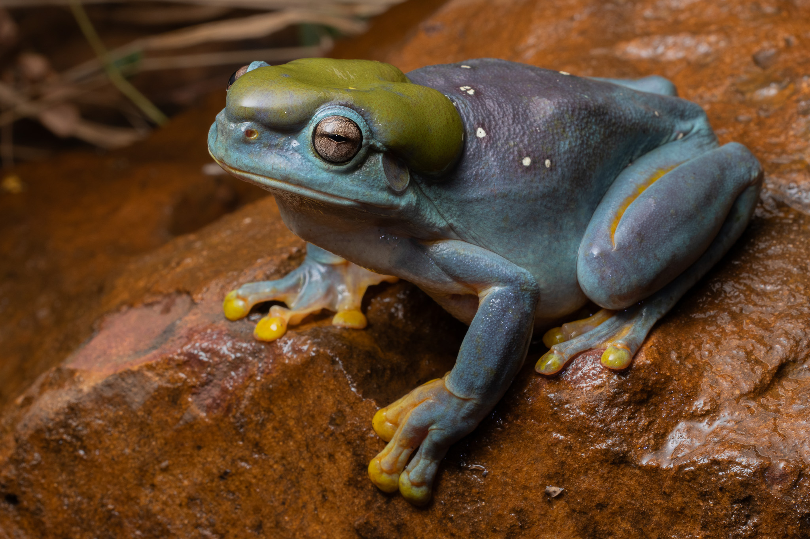
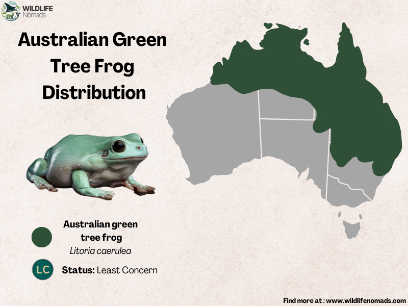

⬆
The Magnificent Tree Frog
Status/Conservation
- The Magnificent Tree Frog is currently of least concern for extinction.
Full Scientific Classification
- Also known as the splendid tree frog.
- Kingdom: Animalia
- Phylum: Chordata
- Class: Amphibia
- Order: Anura
- Family: Hylidae
- Genus Species: Litoria
- Species: Splendida
Physical Profile
- Can be found green or blue in color and have a large parotid gland[1] on its head.
- They are decently sized frogs with a typical length of 4.1 inches.

Source: MONGABAY
Habitat & Geography
- Magnificent tree frogs live on the northwestern coast of Australia and are typically found on rocks and in crevices and caves.
- Commonly found in moist places.

Source: WILDLIFE Nomads
Ecology & Behavior
Feeding & Diet:
- The magnificent tree frog's diet may include insects, earthworms, spiders, and small lizards.
Behaviors and Adaptations:
Communication:
- They let out loud, acoustic calls produced by inflating and deflating their large throat sacs.
Life History Cycle & Breeding Behaviors:
- Breeds during summer in the wet season.
- Eggs are laid as small floating clusters that sometimes sink to the bottom of rock pools.
Predators:
- These frogs are the prey of birds or snakes.
⬆